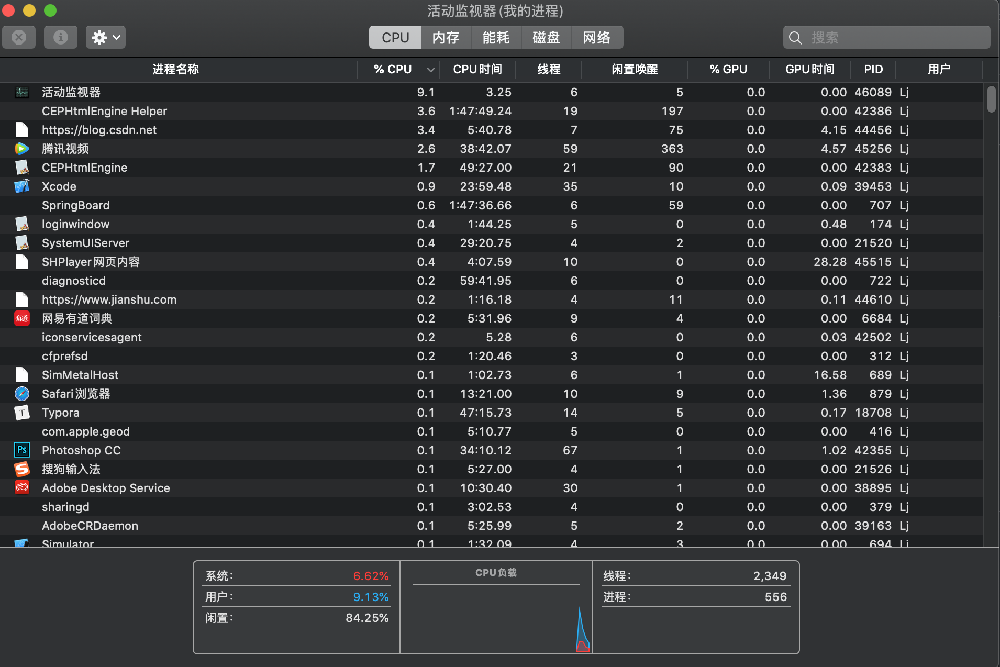
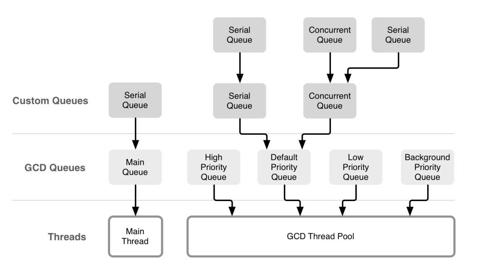
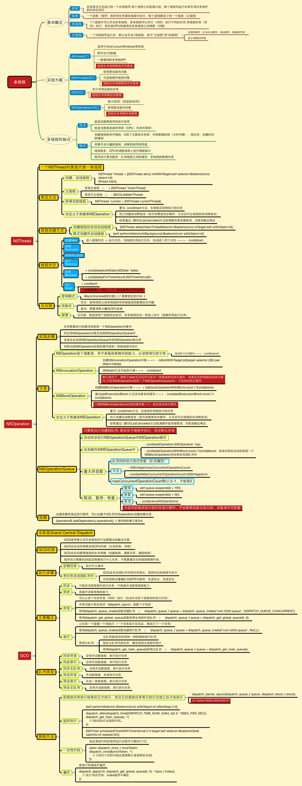
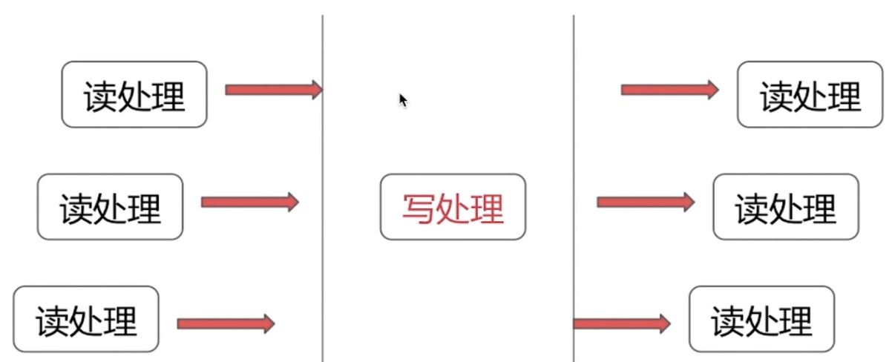

打开mac的活动监视器，可以看到很多个进程同时运行

同一时间，CPU只能处理1条线程，只有1条线程在执行。多线程并发执行，其实是CPU快速地在多条线程之间调度（切换）。如果CPU调度线程的时间足够快，就造成了多线程并发执行的假象。
如果线程非常非常多，CPU会在N多线程之间调度，消耗大量的CPU资源，每条线程被调度执行的频次会降低（线程的执行效率会降低）
多线程的优点：
能适当提高程序的执行效率
能适当提高资源利用率（CPU、内存利用率）
多线程的缺点：
开启线程需要占用一定的内存空间（默认情况下，主线程占用1M，子线程占用512KB），如果开启大量的线程，会占用大量的内存空间，降低程序的性能
线程越多，CPU在调度线程上的开销就越大
程序设计更加复杂：比如线程之间的通信、多线程的数据共享。
就是执行操作的意思，也就是在线程中执行的那段代码，在GCD中是放在block中的。执行任务有两种方式：同步执行（sync）和异步执行（async）
队列（Dispatch Queue）：这里的队列指执行任务的等待队列，即用来存放任务的队列。队列是一种特殊的线性表，采用FIFO（先进先出）的原则，即新任务总是被插入到队列的末尾，而读取任务的时候总会从队列的头部开始读取。没读取一个任务，则从队列中释放一个任务
在GCD中有两种队列：串行队列和并发队列。两者都符合FIFO（先进先出）的原则。两者的主要区别是：执行顺序不同，以及开启线程数不同。
串行队列（Serial Dispatch Queue）：
同一时间内，队列中只能执行一个任务，只有当前的任务执行完成之后，才能执行下一个任务。（只开启一个线程，一个任务执行完毕后，再执行下一个任务）。主队列是主线程上的一个串行队列，是系统自动为我们创建的。
并发队列（Concurrent Dispatch Queue）:
同时允许多个任务并发执行。（可以开启多个线程，并且同时执行任务）。并发队列的并发功能只有在异步（dispatch_async）函数下才有效

主要有三种：NSThread、NSoperationQueue、GCD
NSThread：轻量级别的多线程计数
是我们自己手动开辟的子线程，如果使用的是初始化方式就需要我们自己启动，如果使用的是构造器方式它就会自动启动。只要是我们手动开辟的线程，都需要我们自己管理该线程，不只是启动，还有该线程使用完毕后的资源回收。
xxxxxxxxxx109101NSThread *thread = [[NSThread alloc] initWithTarget:self selector:@selector(testThread:) object:@"我是参数"];2// 当使用初始化方法出来的主线程需要start启动3[thread start];4// 可以为开辟的子线程起名字5thread.name = @"NSThread线程";6// 调整Thread的权限 线程权限的范围为0 ~ 1，越大权限越高，先执行的概率就会越高，由于是概率，所以并不能很准确的实现我们想要的执行顺序，默认值是0.57thread.threadPriority = 1;8// 取消当前已启动的线程9[thread cancel];10// 通过遍历构造器开辟子线程11[NSThread datachNewThreadSelector:@selector(testThread:) toTarget:self withObject:@"构造器方法"]performSelector... 只要是NSObject的子类或者对象都可以通过调用方法进入子线程和主线程，其实这些方法所开辟的子线程也是NSThread的另一种体现方式。
在编译阶段并不会去检查方法是否有效存在，如果不存在只会给出警告
xxxxxxxxxx1// 在当前线程。延迟1s执行。响应了OC语言的动态性，延迟到行时才绑定方法2[self performSelector:@selector(aaa) withObject:nil afterDelay:1];3// 回到主线程。waitUntilDone: 是否将该回调方法执行完在执行后面的代码，如果YES：就必须等回调方法执行完成之后才能执行后面的代码，说白了就是阻塞当前的线程；如果是NO：就是不等回到方法结束，不会阻塞当前线程4[self performSelectorOnMainThread:@selector(aaa) withObject:nil withUntilDone:YES];5// 开辟子线程6[self performSelectorInBackground:@selector(aaa) withObject:nil];7// 在指定线程执行8[self performSelector:@selector(aaa) onThread:[NSThread currentThread] withObject:nil waitUntilDone:YES];需要注意的是：如果是带afterDelay的延时函数，会在内部创建一个NSTimer，然后添加到当前线程的Runloop中。也就是如果当前线程没有开启runloop，该方法会失效。在子线程中，需要启动runloop（注意调用顺序）
xxxxxxxxxx1[self performSelector:@selector(aaa) withObject:nil afterDelay:1];2[[NSRunLoop currentRunloop] run];而performSelector:withObject:只是一个单纯的消息发送，和时间没有一点关系。所以不需要添加到子线程的RunLoop中也能执行
GCD对比NSOprationQueue
我们要明确NSOprationQueue与GCD之间的关系
GCD是面向底层的C语言的API，NSOprationQueue用GCD构建封装的，是GCD的高级抽象。
实际项目开发中，很多时候只是会用到异步操作，不会有特别复杂的线程关系管理，所以苹果推崇的且优化完善、运行快速的GCD是首选
如果考虑异步操作之间的事务性、顺序性、依赖关系，比如多线程并发下载，GCD需要自己写更多的代码来实现，而NSOprationQueue已经内建了这些支持。
不论是GCD还是NSOprationQueue，我们接触的都是任务和队列，都没有直接接触到线程，事实上线程管理也的确不需要我们操心，系统对于线程的创建，调度管理和释放都做的很好。
而NSThread需要我们自己去管理线程的生命周期，还要考虑线程同步、加锁问题，造成一些性能上的开销

iOS中，有GCD、NSOperation、NSthread等几种多线程技术方案。
而GCD共有三种队列类型：
main queue：通过dispatch_get_main_queue()获得，这是一个与主线程相关的串行队列。
global queue：全局队列是并发队列，由整个进程共享。存在着高、中、低三种优先级的全局队列。调用dispatch_get_global_queue并传入优先级来访问队列。
自定义队列：通过函数dispatch_queue_create创建的队列。
死锁就是队列引起的循环等待
xxxxxxxxxx1- (void)viewDidLoad {2 [super viewDidLoad];3 4 dispatch_sync(dispatch_get_main_queue(), ^{5 NSLog(@"dealloc");6 });7}在主线程中运用主队列同步，也就是把任务放到了主线程的队列中。
同步对于任务是立刻执行的，那么当把任务放进主队列时，它就会立马执行，只有执行完这个任务，viewDidLoad才会继续向下执行。
而viewDidLoad和任务都是在主队列上的，由于队列的先进先出原则，任务又需要等待viewDidLoad执行完毕后才能继续执行，viewDidLoad和这个任务就形成的了相互循环等待，就造成了死锁。想避免这种死锁，可以将同步改成异步dispatch_async，或者将dispatch_get_main_queue换成其他串行或并行队列，都可以解决。
x
1dispatch_queue_t serialQueue = dispatch_queue_create("test", DISPATCH_QUEUE_SERIAL);2dispatch_async(serialQueue, ^{3 dispatch_sync(serialQueue, ^ {4 NSLog(@"deadlock")5 });6});外面的函数无论是同步还是异步都会造成死锁。
这是因为里面的任务和外面的任务都在同一个serialQueue队列内，又是同步，这就和上边主队列同步的例子一样造成了死锁
解决方法也是和上边一样，将里面的同步改成异步dispatch_async,或者将serialQueue换成其他串行或并行队列，都可以解决
x
1dispatch_queue_t serialQueue = dispatch_queue_create("test", DISPATCH_QUEUE_SERIAL);2disptach_quete_t serialQueue2 = dispatch_queue_create("test", DISPATCH_QUEUE_SERIAL);34dispatch_async(serialQueue, ^{5 dispatch_sync(serialQueue2, ^ {6 NSLog(@"deadlock")7 });8});这样是不会死锁的，并且serialQueue和serialQueue2是在同一个线程中的。
xxxxxxxxxx1 dispatch_queue_t serialQueue = dispatch_queue_create("test", DISPATCH_QUEUE_SERIAL);2 3 NSLog(@"1");4 5 dispatch_async(serialQueue, ^{6 NSLog(@"2");7 });8 9 NSLog(@"3");10 11 dispatch_sync(serialQueue, ^{12 NSLog(@"4");13 });14 15 NSLog(@"5");打印顺序是13245
原因是：
首先先打印1
接下来将任务2添加至串行队列想，由于任务2是异步，不会阻塞线程，继续向下执行，打印3然后是任务4，将任务4添加至串行队列上，因为任务4和任务2在同一串行队列，根据队列先进先出原则，任务4必须等任务2执行完后才能执行，又因为任务4是同步任务，会阻塞线程，只有执行完任务4才能继续向下执行打印5
所以最终顺序就是13245
这里的任务4在主线程中执行，而任务2在子线程中执行，
如果任务4是添加到另一个串行队列或并行对，则任务2和任务4无序执行（可以添加多个任务看效果）
xxxxxxxxxx1dispatch_async(dispatch_get_global_queue(0, 0), ^{2 [self performSelector:@selector(test:) withObject: nil afterDelay: 0];3});这里的test方法是不会去执行的，原因在于
xxxxxxxxxx1- (void)performSelector:(SEL)aSelector withObject:(id)anArgument afterDelay:(NSTimeInterval)delay;这个方法要创建提交任务到runloop上的，而GCD底层创建的线程是默认没有开启对应的runloop的，所以这个方法就会失效。
而如果将dispatch_get_global_queue改成主队列，由于主队列所在的主线程默认开启了runloop的，就会去执行（将dispatch_async改成同步，因为同步是在当前线程执行，那么如果当前线程是主线程，test方法也是会去执行的）。
多读单写的意思就是：可以多个读者同时读取数据，而在读的时候，不能去写数组。并且，在写的过程中，不能有其他写者去写。即读者之间是并发的，写者与读者或其他写者是互斥的。

这里的写处理就是通过栅栏的形式去写。
就可以用dispatch_barrier_sync(栅栏函数)去实现
171 dispatch_queue_t concurrentQueue = dispatch_queue_create("test", DISPATCH_QUEUE_CONCURRENT);2 3 for (NSInteger i = 0; i < 10; i ++) {4 dispatch_sync(concurrentQueue, ^{5 NSLog(@"%zd", i);6 });7 }8 9 dispatch_barrier_sync(concurrentQueue, ^{10 NSLog(@"barrier");11 });12 13 for (NSInteger i = 10; i < 20; i ++) {14 dispatch_sync(concurrentQueue, ^{15 NSLog(@"%zd", i);16 });17 }这里的dispatch_barrier_sync上的队列要和需要阻塞的任务在同一队列上，否则是无效的。
从打印上看，任务0-9和任务10-19因为是异步并发的原因，彼此是无序的。而由于栅栏函数的存在，导致顺序必然是先执行任务0-9，在执行栅栏函数，再去执行任务10-19.
dispatch_barrier_sync: 提交一个栅栏函数在执行中，它会等待栅栏函数执行完。
dispatch_barrier_async:提交一个栅栏函数在异步执行中，它会立马返回。
而dispatch_barrier_sync和dispatch_barrier_async的区别也就在于会不会阻塞当前线程，比如上述代码如果在dispatch_barrier_async后随便加一条打印，则会先去执行该打印，再去执行任务0-9和栅栏函数；而如果是dispatch_barrier_sync，则会在任务0-9和栅栏函数后去执行这条打印。
161- (id)readDataForKey:(NSString *)key {2 __block id result;3 4 dispatch_sync(_concurrentQueue, ^{5 result = [self valueForKey:key];6 });7 8 return result;9}1011- (void)writeData:(id)data forKey:(NSString *)key {12 dispatch_barrier_async(_concurrentQueue, ^{13 [self setValue:data forKey:key];14 });15}16场景：在n个耗时并发人去都完成后，在去执行接下来的任务，比如,在n个网络请求完成后去刷新UI页面。
xxxxxxxxxx141 dispatch_queue_t councurrentQueue = dispatch_queue_create("test", DISPATCH_QUEUE_CONCURRENT);2 3 dispatch_group_t group = dispatch_group_create();4 5 for (NSInteger i = 0; i < 10; i ++) {6 dispatch_group_async(group, councurrentQueue, ^{7 sleep(1);8 NSLog(@"%zd:网络请求",i);9 });10 }11 12 dispatch_group_notify(group, dispatch_get_main_queue(), ^{13 NSLog(@"刷新页面");14 });GCD 中的信号量是指Dispatch Semaphore，是持有计数的信号。
Dispatch Semaphore 提供了三个函数
dispatch_semaphore_create：创建一个Semaphore并初始化信号的总量
dispatch_semaphore_signal：发送一个信号，让信号总量加1
dispatch_semaphore_wait：可以使总信号量减1，当信号量为0是就会一直等待（阻塞所在线程），否则就可以正常执行。
Dispatch Semaphore 在实际开发中主要用于：
1、保持线程同步：
xxxxxxxxxx101 dispatch_semaphore_t semaphore = dispatch_semaphore_create(0);2 __block NSInteger number = 0;3 dispatch_async(dispatch_get_global_queue(DISPATCH_QUEUE_PRIORITY_DEFAULT, 0), ^{4 number = 100;5 dispatch_semaphore_signal(semaphore);6 });7 8 dispatch_semaphore_wait(semaphore, DISPATCH_TIME_FOREVER);9 10 NSLog(@"semaphore---end, number = %zd.,", number);dispatch_semaphore_wait加锁阻塞了当前线程，dispatch_semaphore_signal解锁首先创建全局变量
xxxxxxxxxx11_semapgore = dispatch_semaphore_create(1);
注意到这里的初始化信号量是1.
xxxxxxxxxx111- (void)asyncTask {2 dispatch_semaphore_wait(_semaphore, DISPATCH_TIME_FOREVER);3 4 count ++;5 6 sleep(1);7 8 NSLog(@"执行任务：%zd",count);9 10 dispatch_semaphore_signal(_semaphore)11}异步并发调用asyncTask
xxxxxxxxxx51 for (NSInteger i = 0;i < 100 ; i ++) {2 dispatch_async(dispatch_get_global_queue(0, 0), ^{3 [self asyncTask];4 });5 }然后发现打印是从任务1顺序执行到100，没有发生两个任务同时执行的情况。
原因如下：
在子线程中并发执行asyncTask，那么第一个添加到并发队里的，会将信号量减1，此时信号量等于0，可以执行接下来的任务。而并发队列中其他任务，由于此时信号量不等于0，必须等当前正在执行的任务执行完毕后调用dispatch_semaphore_signal将信号量加1，才能继续执行接下来的任务，以此类推，从而达到线程加锁的目的。
dispatch_after能让我们添加进队列的任务延时执行，该函数并不是在指定时间后执行处理，而只是在指定时间追加处理到disptach_queue
xxxxxxxxxx41// 第一个参数time, 第二个参数是dispatch_queue, 第三个参数是要执行的block2 dispatch_after(dispatch_time(DISPATCH_TIME_NOW, (int64_t)(2 * NSEC_PER_SEC)), dispatch_get_main_queue(), ^{3 NSLog(@"dispatch_after");4 });由于其内部使用的是dispatch_time_t管理的时间，而不是NSTimer.
所以如果在子线程中调用，相比performSelector:afterDelay,不用关心runloop是否开启。
xxxxxxxxxx121+ (instancetype)shareInstance {2 static dispatch_once_t onceToken;3 4 static id instance = nil;5 6 dispatch_once(&onceToken, ^{7 instance = [[self alloc]init];8 });9 10 return instance;11}12